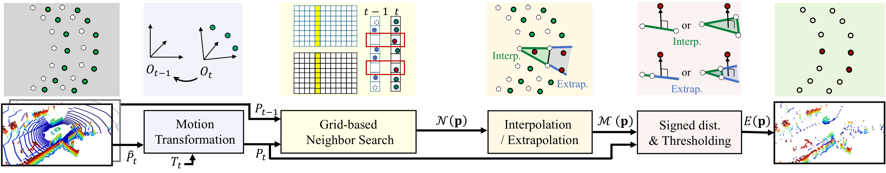
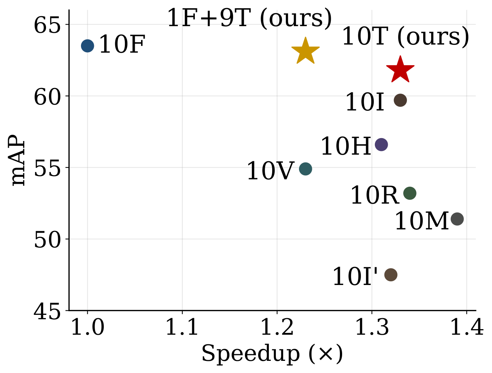
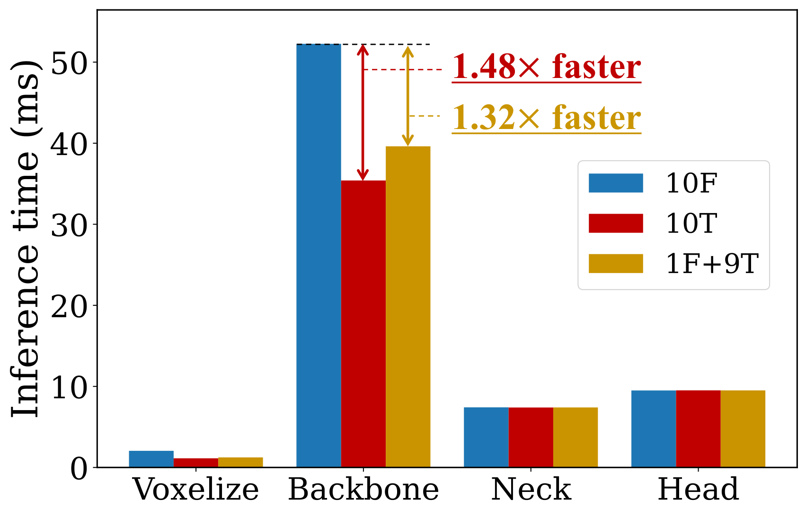

Event-LiDAR: 3D Eventification for Efficient Point Cloud Processing
Abstract
We propose Event-LiDAR, a 3D eventification framework that converts conventional LiDAR scans into temporally sparse representations for efficient point cloud processing. Unlike dense multi-scan processing, naive frame differencing, or correspondence-based residuals, 3D event extraction is formulated as a temporal estimation problem under sparse, viewpoint-dependent observations. Short-term geometric evolution across consecutive scans is approximated with a first-order geometric model, and deviations unexplained by this model are treated as events. This yields compact, information-preserving representations that suppress redundancy while retaining changes unpredictable by the first-order model. Event-LiDAR is applied to LiDAR-based 3D object detection with existing backbones, and an event-aware network design is further introduced to reallocate modeling capacity toward the input stage for sparse inputs. On nuScenes, under the 1F+9T setting with a 72% point reduction, Event-LiDAR maintains accuracy comparable to full-scan baselines while achieving 23% faster end-to-end inference on PTv3, driven in part by a 32% speedup in its feature extraction backbone. The gains generalize across backbones, with a 9% end-to-end speedup on CenterPoint under the same setting. Training is likewise accelerated by 17% under the same setting. Event-LiDAR thus serves as a low-latency, architecture-agnostic geometric preprocessor inspired by event-based sensing, providing a practical front-end for efficient 3D point cloud perception.
Method

Temporal differentiation extracts 3D events in four stages: (i) ego-motion compensation warps the current scan into the previous scan's coordinate frame; (ii) a grid-based neighbor search retrieves the local neighborhood of each point; (iii) a local first-order geometric model predicts the current local geometry by interpolation or extrapolation; and (iv) the signed deviation Δd(p) from this prediction is thresholded, keeping points with |Δd(p)| ≥ τ0 as events. Each event point carries Δd(p) as an additional input feature.

Interactive Demo
Results


References
- [1] Wu, H., Li, Y., Xu, W., Kong, F., Zhang, F.: Moving event detection from LiDAR point streams. Nature Communications 15(1), 345 (2024)
- [2] Fan, L., Yang, Y., Wang, F., Wang, N., Zhang, Z.: Super Sparse 3D Object Detection. IEEE TPAMI 45(10), 12490–12505 (2023)
- [3] Yoon, D., Tang, T., Barfoot, T.: Mapless Online Detection of Dynamic Objects in 3D Lidar. In: 2019 16th Conference on Computer and Robot Vision (CRV). pp. 113–120 (2019)
BibTeX
@inproceedings{murakami2026eventlidar,
title = {Event-LiDAR: 3D Eventification for Efficient Point Cloud Processing},
author = {Murakami, Masatoshi and Tsuji, Eisho and Sakurada, Ken},
booktitle = {European Conference on Computer Vision (ECCV)},
year = {2026}
}